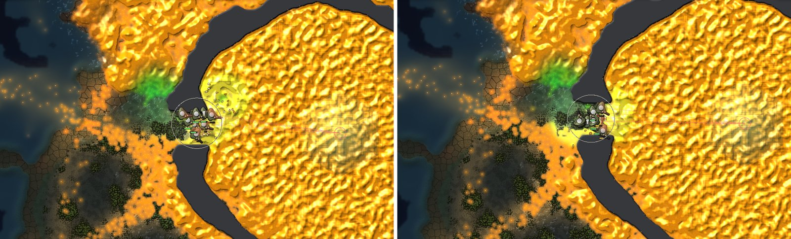
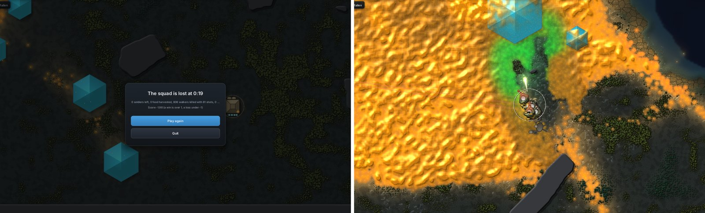

<title>Set Slime Bulwark</title>
<meta name="claude:viewport-fit-sides" content="cover">
<link rel="stylesheet" href="https://fonts.googleapis.com/css2?family=Inter:wght@400;600&family=Space+Grotesk:wght@500;700&display=swap">
<style>
:root { --bg:#f6f3ec; --fg:#1d1b17; --muted:#6b655a; --card:#fffdf8; --line:#e2dccf; --accent:#c76a0a; }
@media (prefers-color-scheme: dark) { :root:not([data-theme="light"]) { --bg:#16140f; --fg:#ece6d8; --muted:#a39b8a; --card:#201d16; --line:#37322a; --accent:#f0a347; color-scheme:dark } }
:root[data-theme="dark"] { --bg:#16140f; --fg:#ece6d8; --muted:#a39b8a; --card:#201d16; --line:#37322a; --accent:#f0a347; color-scheme:dark }
body { background:var(--bg); color:var(--fg); font:15px/1.55 Inter, system-ui, sans-serif; padding-left:max(16px, env(safe-area-inset-left, 0px)); padding-right:max(16px, env(safe-area-inset-right, 0px)); padding-block:24px 48px }
main { max-width:980px; margin:0 auto }
h1, h2 { font-family:"Space Grotesk", Inter, sans-serif; text-wrap:balance; line-height:1.2 }
h1 { font-size:1.9rem; margin:0 0 .3rem }
h2 { font-size:1.25rem; margin:2rem 0 .5rem }
p { max-width:68ch }
.sub { color:var(--muted); margin:0 0 1.2rem }
figure { margin:1rem 0; background:var(--card); border:1px solid var(--line); border-radius:10px; padding:10px }
figure img { display:block; width:100%; border-radius:6px }
figcaption { color:var(--muted); font-size:.9rem; margin-top:.5rem }
.wrap { overflow-x:auto }
table { border-collapse:collapse; font-size:.92rem; min-width:520px; width:100% }
th, td { text-align:right; padding:6px 10px; border-bottom:1px solid var(--line); font-variant-numeric:tabular-nums }
th:first-child, td:first-child, th:nth-child(2), td:nth-child(2) { text-align:left }
th { font-weight:600; color:var(--muted) }
b.k { color:var(--accent) }
.labels { display:grid; grid-template-columns:1fr 1fr; gap:10px; font-size:.85rem; color:var(--muted); margin-top:.4rem }
</style>
<main>
<h1>Set slime bulwark</h1>
<p class="sub">Simulation-use plan step E2b, 2026-11-17. Where the slime has set (E2a), its cells stop being ground for soldiers: their feet stop at the rim, and their walking maps route round it (refreshed at most every 5 s). Off by default, behind <code>setting=1 set=set_block=5</code>. Planet 3, llvmpipe, rifles, one look per seed.</p>

<h2>A squad that rushes in</h2>
<figure>

<div class="labels"><span>Bulwark off</span><span>Bulwark on (5 set walkers in a 3 x 3)</span></div>
<figcaption>Seed 4, 20 s. Eight rifles told to attack walk into the body. Off, they are already in it and hurt. With the bulwark the set rim holds them in the gap's mouth (1,676 bulwark cells), and they shoot from there.</figcaption>
</figure>
<div class="wrap"><table>
<tr><th>Seed</th><th>Bulwark</th><th>Wiped at</th><th>Killed</th></tr>
<tr><td>1</td><td>off</td><td>19 s</td><td>806</td></tr>
<tr><td>1</td><td>feet only (dropped)</td><td>24 s</td><td>1,172</td></tr>
<tr><td>1</td><td>feet and maps</td><td>28 s</td><td><b class="k">1,365</b></td></tr>
<tr><td>4</td><td>off</td><td>30 s</td><td>670</td></tr>
<tr><td>4</td><td>feet only (dropped)</td><td>37 s</td><td>1,205</td></tr>
<tr><td>4</td><td>feet and maps</td><td>39 s</td><td><b class="k">776</b></td></tr>
</table></div>
<p>Held at the rim, the rushing squad lasts 8-9 s longer. On seed 1 the rim is the way in and it killed 69% more. On seed 4 the maps sent it round the rim into unset slime 66 cells south, where it did about as it does without. As built, blocking mostly shelters a reckless push or sends it round. Whether that shelter is wanted is a playtest question.</p>
<figure>

<div class="labels"><span>Bulwark off: lost at 0:19</span><span>Feet only: still at the rim at 20 s</span></div>
<figcaption>Seed 1, 20 s (the first build, feet only).</figcaption>
</figure>

<h2>Why the maps had to know</h2>
<p>A point check alone (feet only, what the map-cache owner first advised) let a soldier ordered past a band of set slime walk its map into the band and stand there. A test now orders a soldier past a 3 x 21-cell band: with the maps routing round, it gets past in 3.1 s; with them blind, it never does in 30 s.</p>

<h2>A squad that stands</h2>
<p>The bulwark forms in front of a standing line (209 cells on seed 1, about 1,000 on seed 4), but a squad that doesn't walk never meets it: seed 1 played exactly as without.</p>
</main>
